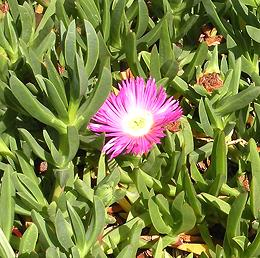
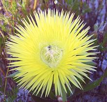
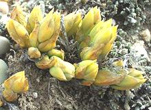

Magnolias

SAFARI
Users
Varieties
New Zealand Spinach
[Warrigal Greens, Sea Spinach, Botany Bay Spinach, Tetragon, Cook's Cabbage; Kokihi (Maori); Tetragonia tetragonioides]
Native to New Zealand and Australia, this plant is sometimes used as an ornamental ground cover, but it's also edible. There is little evidence the native Maori ate the stuff, but after Captain Cook discovered it he used it fresh and pickled to ward off scurvy in his crew. He took seeds to England and it was soon grown there, in France and in North America, but faded out during the 20th century.
Today New Zealand spinach is grown by home gardeners in the summer
when regular spinach won't grow. It's not a commercial crop in California
but is grown commercially in the tropical Americas. Unlike Malabar Spinach
which grows long and likes to be trellised, New Zealand is low and spreading.
It is usually cooked but can also be used raw in salads.
Photo by US Geological Survey = public domain.
Ice Plant
 [Freeway Plant (California); Hottentot Fig, Sour Fig (South Africa); Vygies (Afrikaans); Carpobrotus edulis | Carpobrotus acinaciformis (less sweet)]
Native to South Africa, this spreading succulent with triangular leaves and brilliant magenta or yellow flowers is now familiar to everyone in California. In the early 1900s it was planted to stabilize soil along railroads, and in the 1960s was extensively planted by Caltrans for freeway landscaping - and now it's everywhere. Few, however, realize both leaves and fruits are edible.
Early Dutch settlers in South Africa made jams, called Konfyt, out of the fruits of both species listed above, but C. edulis is sweet enough to be eaten fresh.
Caltrans stopped using it in the 1970s because it was becoming an
aggressive invasive in the coastal environment - but there's still
thousands of acres of it - and it's presenting the same problems in
Australia and the Mediterranian Region.
Vetkousies
 [Yellow Carpet; Carpanthea pomeridiana of family Aizoaceae]
Native to South Africa, this spreading succulent is closely related
to the Ice Plant, but its leaves are more flat than triangular.
Flowers were used by early Dutch settlers in South Africa in stews
called "Bredies". Young leaves were also used in salads.
Photo by Andrew Massyn distributed under license
Creative Commons
Attribution-ShareAlike 3.0 Unported.
Kanna
 [Channa, Kougoed; Sceletium tortuosum]
This succulent herb, native to South Africa, is not used for nutrition, but for its mood altering properties. It is reputed to reduce anxiety and supress hunger. Traditionally, it was dried and chewed. Today it's made into gel caps, teas and tinctures - as well as used as snuff and for smoking. It is said to enhance the effects of other psychoactive herbs, such as cannabies - though it may have adverse effects with alcohol and some other drugs. Study is ongoing.
North American companies are studying extracts for use in products.
One reports "statistically significant improvement in cognitive set
flexibility". I interpret this "cognitive flexibility" to mean "more
liberal", so the GOP will probably move to have it banned.
Photo by Accord H. Brisse distributed under license
Creative Commons
Attribution-ShareAlike v3.0 Unported.